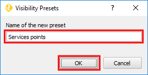
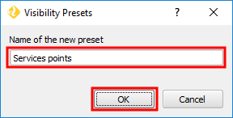

Services points in the Name of the new preset field and click OK

This lesson's project is composed of several layers. Currently, it as only one layer turned off, the Services heatmap, showing the Services' point layers only. Let's create a preset to save this visibility combination. In the Layers Panel:
Services points in the Name of the new preset field and click OK

You have created a new preset called Services points. In the next steps, we will create another one.
Once you are ready, click Next step.